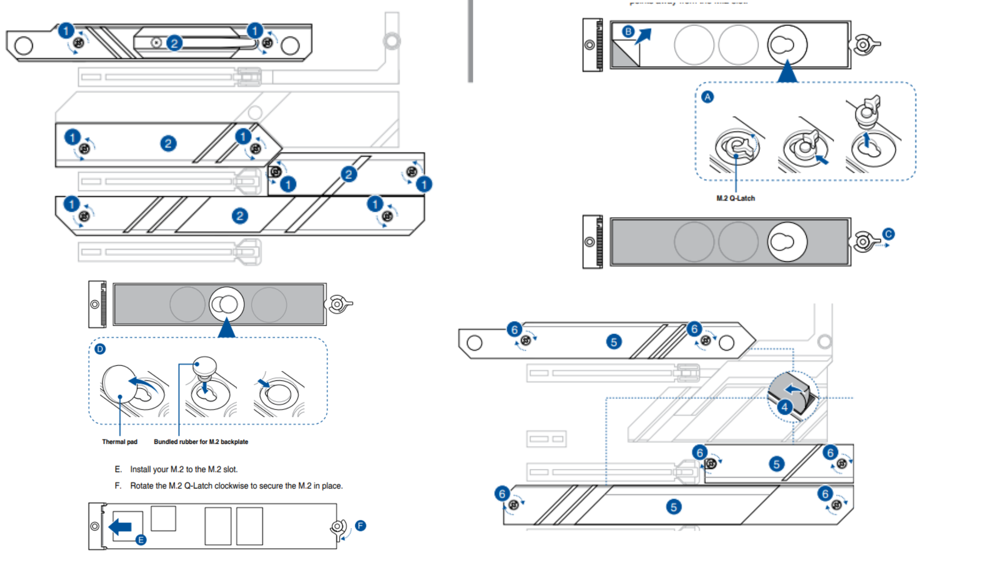
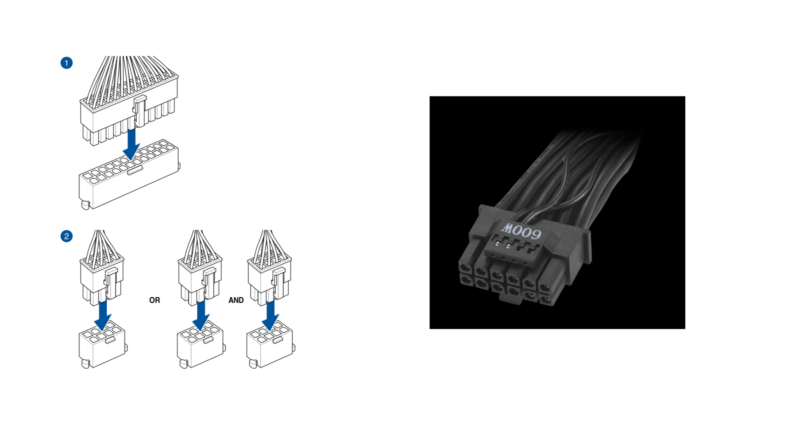

Meu pc
Motherboard: Asus ROG STRIX Z790-E GAMING WIFI ATX LGA1700
-É uma placa-mãe de alto desempenho projetada para processadores Intel série LGA1700, voltada para entusiastas de jogos, e oferece recursos e capacidades avançadas para otimizar o desempenho de computadores para jogos.
-É compatível com processadores Intel série LGA1700 de 12ª geração, tornando-a ideal para sistemas de alto desempenho.
-Apresenta design de alta qualidade com componentes de qualidade premium para garantir longa vida útil e desempenho estável.
-Suporta módulos de memória DDR4 de alta velocidade para desempenho ideal em jogos e aplicações intensivas.
Manual
PDF
CPU: Intel Core i7-13700K
Instalção
-Remova a placa-mãe: Caso ainda não tenha feito isso, remova a placa-mãe do gabinete do computador e coloque-a sobre uma superfície adequada.
-Abra o soquete da CPU: Na placa-mãe, localize o soquete da CPU e abra a alavanca de retenção. Isso pode variar dependendo do modelo da placa-mãe.
-Confira a orientação: Certifique-se de que a CPU esteja orientada corretamente. Os pinos da CPU devem corresponder aos pinos do soquete, geralmente há uma marca ou entalhe na CPU que o ajudará a alinhá-la corretamente.
- Instale a CPU: Coloque cuidadosamente a CPU no soquete, certificando-se de que esteja alinhada corretamente. Não aplique força excessiva; a CPU deve caber sem problemas. Não toque nos pinos dourados da CPU.
-Feche o soquete: Abaixe cuidadosamente a alavanca de retenção para fixar a CPU no lugar. Você deverá sentir resistência, mas não force a alavanca. Certifique-se de que esteja bem preso.
CPUCOOLER: NZXT Kraken Elite 360 RGB 78.02 CFM Liquid CPU Cooler
-É um sistema de refrigeração líquida (water cooler) para CPU projetado para manter a temperatura do seu processador em níveis ideais, especialmente em situações de alta carga de trabalho, como jogos intensivos.
Instalação
-Montando o water block: Coloque o suporte do water block na parte traseira da placa-mãe, alinhando os furos do suporte com os furos de montagem da CPU na placa-mãe. -Abra o soquete da CPU: Na placa-mãe, localize o soquete da CPU e abra a alavanca de retenção. Isso pode variar dependendo do modelo da placa-mãe.
-Coloque o bloco de água no processador, alinhando os orifícios de montagem com os do suporte. -Instale a CPU: Coloque cuidadosamente a CPU no soquete, certificando-se de que esteja alinhada corretamente. Não aplique força excessiva; a CPU deve caber sem problemas. Não toque nos pinos dourados da CPU.
-Fixe o bloco de água no lugar usando os parafusos de montagem fornecidos. Aperte os parafusos com cuidado para evitar danos à CPU.
-Conectando os cabos: Conecte a ventoinha do radiador e os cabos da bomba aos conectores correspondentes na placa-mãe.
Memoria1: G. Skill Trident Z5 RGB 64 GB DDR5-6400 CL 32 MEMORY
-Velocidade mais rápida: DDR5 oferece velocidades de transferência de dados mais rápidas, o que se traduz em melhor desempenho, principalmente em tarefas que exigem alta velocidade de acesso à memória, como jogos.
-Mais capacidade: Os módulos DDR5 permitem maior capacidade de memória em comparação com seus antecessores.
-Eficiência energética: O DDR5 também foi projetado para ser mais eficiente em termos energéticos, o que pode ajudar a reduzir o consumo de energia e o calor gerado no sistema.
Nota
-Para obter melhor desempenho, emparelhe módulos de memória do mesmo tipo, velocidade e capacidade. Por este motivo instale as memórias de 32 GB juntas, obtendo uma configuração de 64 GB.
Memoria 2: Memoria: G. skill Trident Z5 RGB 32 GB DDR5-6000 CL36 Memory
-Os módulos de memória G.Skill Trident Z5 RGB são conhecidos por seu desempenho e estética atraente.
-Capacidade e velocidade: Fornece uma grande quantidade de memória e uma velocidade de transferência de dados muito alta.
-Iluminação RGB: Os módulos G.Skill Trident Z5 RGB normalmente incluem iluminação RGB personalizável que permite aos usuários personalizar a aparência de seu sistema com uma variedade de cores e efeitos de iluminação.
-Dissipador de calor: Esses módulos normalmente possuem um dissipador de calor que não apenas melhora a estética, mas também ajuda a dissipar o calor gerado durante o uso, o que pode ser especialmente útil em sistemas de alto desempenho.
NOTA
-As memórias de 16 GB estão juntas para facilitar o gerenciamento da memória e manter o equilíbrio. Isso resultaria em uma configuração de 32 GB.
Instalação
-Localize os bancos de memória: Na placa-mãe, identifique os bancos de memória RAM.
-Pressione as abas de retenção: Em cada slot DIMM, você verá abas de retenção em ambos os lados, pressione suavemente as abas de retenção para fora e para baixo para destravar o slot.
-Alinhe o módulo de memória: Segurando o módulo de RAM pelas extremidades sem tocar nos contatos dourados, alinhe o entalhe no módulo de memória com o entalhe no slot DIMM da placa-mãe.
-Insira o módulo de memória: Deslize o módulo de RAM no slot DIMM com cuidado, mas com firmeza, até que ele se encaixe no lugar.
Storage: Samsung 970 Evo Plus 2-2280 PCIe 3.0 X4 NVME Solid State Drive
-O Samsung 970 Evo Plus é uma unidade de estado sólido (SSD) de alta qualidade usada para armazenamento de dados em um computador. Este SSD específico é conhecido por seu desempenho e confiabilidade e usa a interface NVMe (Non-Volatile Memory Express) para fornecer velocidades de transferência de dados excepcionalmente rápidas.
-Fator de forma e conexão: É fino e pequeno e se conecta diretamente à placa-mãe em um slot M.2.
-Velocidade de leitura e gravação: Este SSD é conhecido por sua velocidade sequencial de leitura e gravação de dados.
Instalação
-Mova e aperte os parafusos nos espaçadores M.2.
-Insira a peça suavemente no conector empurrando-a em direção ao espaçador e fixe-a com o pequeno parafuso

Fonte de alimentaçãoAsus ROG THOR 1600T Gaming 1600 W 80+ Titanium Certified Fully Modular ATX Power Supply
-Ele foi projetado para atender às necessidades de sistemas de computador de alto desempenho, especialmente aqueles destinados a jogos.
-Certificação de Potência e Eficiência: Possui potência máxima de 1600 watts, o que a torna uma fonte de alimentação extremamente potente. Além disso, é certificado 80+ Titanium, o que significa que atende aos mais altos padrões de eficiência energética. Isso resulta em consumo de energia mais eficiente e menor geração de calor.
-Totalmente modular: Esta fonte de alimentação é completamente modular, o que significa que os cabos podem ser desconectados e conectados conforme necessário. Isso facilita a instalação e o gerenciamento de cabos em seu sistema, resultando em uma aparência mais limpa e melhor circulação de ar.
-Silencioso: Esta fonte de alimentação possui um modo de ventilador híbrido que ajusta a velocidade do ventilador com base na carga e na temperatura, o que pode ajudar a manter seu sistema mais silencioso em situações de carga baixa.
Instalação
-Coloque a fonte de alimentação na posição apropriada
-Conecte os cabos de alimentação

Placa de vídeo: Asus ROG STRIX GAMING OC GeForce RTX 4090 24 GB Video Card
-É uma placa gráfica de última geração projetada para jogos, capaz de atingir taxas de quadros superiores a 100 fps na maioria dos jogos modernos.
Instalação
-Localize o slot PCIe x16 da placa gráfica.
-Remova a tampa do slot PCIe x16.
-Alinhe os conectores da placa gráfica com as portas do slot PCIe x16.
-Pressione suavemente a placa gráfica até que ela se encaixe no lugar.
-Prenda a placa gráfica com os parafusos fornecidos com a placa-mãe.
-Conecte o conector de alimentação PCIe da placa gráfica à fonte de alimentação.
-Recoloque a tampa do slot PCIe x16.
Case: Corsair iCUE 4000D RGB AIRFLOW ATX Mid Tower Case
Instalação placa mãe
-Coloque a placa-mãe no chassi, certificando-se de que as portas de E/S traseiras estejam alinhadas com painel de E/S traseiro do chassi.
-Coloque nove (9) parafusos nos orifícios indicados por círculos para fixar a placa-mãe o chassi.
Power botão
Conexão de dispositivo SATA
Conector de E/S frontal
Laura Gomez
Curso: P.I